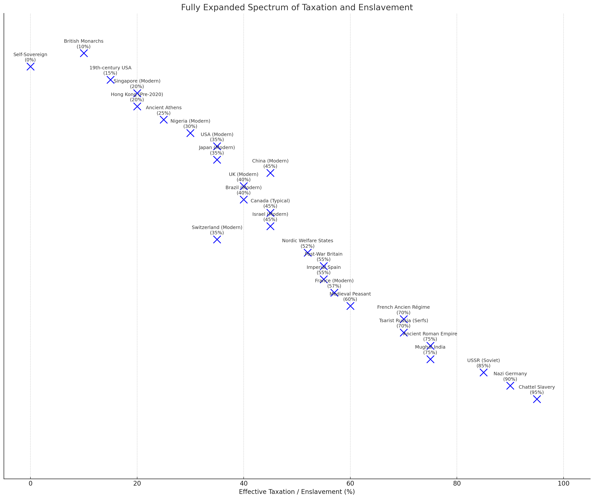

The Coercion Continuum
Degree, not kind
A medieval peasant owed his lord a substantial share of everything he produced, enforced by the lash and the lord’s court. A modern French taxpayer surrenders a comparable share of everything he produces, enforced by the fine and the revenue court. One of these arrangements we teach schoolchildren to recognize as servitude. The other we call fiscal policy. The instinct — and it is a strong one — says that these are different in kind: that taxation is a civic duty and slavery a moral atrocity, and that putting them in the same sentence is a category error or a provocation.
I am going to argue that the instinct is wrong in a specific way. Taxation and slavery are not morally equivalent, but both can be located on one important dimension: compelled extraction of labor or output backed by credible threats of material setback. They differ enormously in dose, scope, bodily control, exit, legal standing, inherited status, and brutality. The shared dimension does not collapse those differences. It prevents everything on the near end from escaping the question the far end answers so easily: by what right?
The Spectrum
Put compelled extraction on a scale. At 0% stands total self-sovereignty: no external coercion, no forced labor, no compulsory obligations of any kind. At 100% stands the absolute appropriation of a person’s output: complete chattel enslavement. Every regime that has ever collected a compulsory share of its subjects’ production sits somewhere between the endpoints.

The placements are estimates, and the axis is deliberately partial. A tax share measures compelled extraction, not bodily control, legal status, exit, or brutality. Its purpose is to put minimal extraction, modern tax states, forced-labor regimes, serfdom, and chattel slavery on one declared dimension without pretending that position on that dimension supplies a complete moral ranking.
No tax state is exempt from the axis, and the moral question cannot be quarantined at its far end. A smaller compulsory claim is not therefore innocent; it owes an answer proportionate to what is taken and how.
Voting, residence, and participation do not by themselves authorize a threat imposed for nonpayment. Tax collection fits the book’s coercion definition; ordinary employment need not, because entitlement, dependency, alternatives, and the baseline differ. Territorial monopoly, ruinous exit, and self-issued sanctions make political consent the harder case.
Taxation also buys things worth having. That benefit begins the justification argument; it does not complete it. The Grey Zone states the remaining burden.
Partial Ownership
There is a libertarian one-liner that the state “owns a piece of you.” It is usually dismissed as a metaphor, and an overheated one. Simon Goddek states the strong version:
From birth to death, the state owns a piece of you. You need permission to build, to sell, to drive, to grow, to speak. Try living without their papers or their taxes and see how “free” you are.
Ownership is a bundle of enforceable claims to use, exclude, and dispose. Audit the state’s relationship to citizens against those incidents.
Use. Law constrains how bodies, property, time, and speech may be used, often through prior permission to drive, build, operate a business, or practice a trade.
Exclude. Licensing, borders, visas, and zoning can exclude people from work, residence, and movement.
Dispose. Taxation claims earnings, while estate and inheritance rules constrain what may be transferred and on what terms.
Use, exclude, dispose: the state asserts enforceable partial claims affecting all three. That makes the ownership analogy structurally informative, but not exhaustive. Jurisdiction, delegated authority, public duty, legal standing, bodily control, and exit still distinguish political obligation from ownership and chattel slavery. The spectrum measures how much output is compulsorily appropriated; the bundle analysis identifies which incidents of control the state claims. Neither settles legitimacy without the Grey Zone inquiry.
The audit cannot assume clean title to external property. Land and wealth may descend from conquest or expropriation, and enforcing a compromised title can itself be a violation. That does not make a claim on labor consensual; it makes title history one of the conditions The Grey Zone must examine.
The Structural License
“It’s not authoritarian to enforce laws and arrest criminals” skips the prior question: who defines the law, and by what right? An unjust law does not become legitimate through orderly enforcement.
The structural definition: authoritarianism is a political system in which a central authority claims the legitimate right to initiate coercion over peaceful individuals without their explicit, ongoing consent. And statism — any system in which the state holds a monopoly on law and force, with no competitive alternative an individual can choose or refuse without forfeiting basic rights — satisfies that definition wherever it appears. Four features, jointly universal across statist regimes:
- Monopoly of force. There is no peaceful opt-out. (The state prosecutes private monopolies while holding the one monopoly that underwrites all its others — a hypocrisy examined in Monopoly Hypocrisy.)
- Presumed consent. Individuals are treated as having agreed to the system without ever signing anything.
- Unilateral rule-making. The state decides what counts as law and can redefine crime at will.
- Coercive enforcement. Compliance is backed by threat of force, including for victimless offenses.
Grant those four features and the differences between regimes, real as they are, become differences of position on a spectrum:
| Type | Core features | Authoritarian risk | Examples |
|---|---|---|---|
| Totalitarian statism | Centralized control over all aspects of life — political, economic, cultural, personal. No meaningful dissent allowed. | Extreme — coercion is overt, frequent, and unlimited. | North Korea, Nazi Germany, Stalinist USSR |
| Strong statism | State controls the economy heavily and regulates personal life, but allows limited dissent if it doesn’t threaten the regime. | Very high — coercion is systemic; dissent is tolerated only superficially. | China, Iran, Saudi Arabia |
| Democratic statism | State power legitimized by elections; still claims a monopoly on law and coercion over non-consenting individuals. Civil liberties exist but are fragile. | Moderate–high — consent is assumed, and laws can infringe rights via majority vote. | USA, UK, EU states |
| Minarchist statism | State limited to police, courts, and defense; no welfare, regulation, or cultural engineering. | Low–moderate — coercion is rare, but the principle of monopoly remains. | Hypothetical night-watchman state |
| Anarchism / statelessness | No monopolistic state; law and enforcement are competitive, voluntary, and contract-based. | Zero structural authoritarianism — though other risks, such as local coercive power, remain. | Historical Icelandic Commonwealth, modern polycentric-law proposals |
Democracy and dictatorship differ profoundly in constraints, acquiescence, severity, and lived freedom while sharing a claimed structural license to initiate coercion beyond explicit agreement. The license is therefore an object of scrutiny distinct from its present rate and manner of use.
The Slaveowner’s Claim
Set the two endpoints of the spectrum side by side and look at the structure of the claims being made.
Slaveholder and tax state both claim a nonconsensual share of another person’s output and enforce that claim through threats. That common mechanism does not establish moral equivalence. Chattel slavery adds bodily ownership, inherited status, domination, blocked exit, and routine violence; it cannot pass a justification test. A limited levy might pass the Agency Protection Principle and Grey Zone, but it must actually do so. Socially valuable expenditure is relevant evidence, not an exemption from the inquiry.
Every generation has blind spots that become obvious in retrospect. Societies capable of sophisticated moral argument saw nothing to discuss in serfdom, conquest, or owning human beings. Future readers may treat compulsory extraction as one of ours; that is a live possibility, not a settled verdict. The prudent response is to run the justification test on familiar institutions rather than assume familiarity supplies legitimacy.
The continuum, then, delivers a diagnosis, not a sentence. It tells you what taxation is: coercive extraction, partial ownership, the same kind of claim the slaveowner made, at a different and much milder point on the axis. What it does not tell you is what follows. For that, two further questions have to be answered. First: what exactly is this mechanism funding, and what does an organization become when extraction is its revenue model? That is the subject of Extortion-Funded Organizations. Second: under what conditions, if any, could coercion of this kind be justified — and who bears the burden of showing them? That is the subject of The Grey Zone, and nothing in this chapter is complete without it.